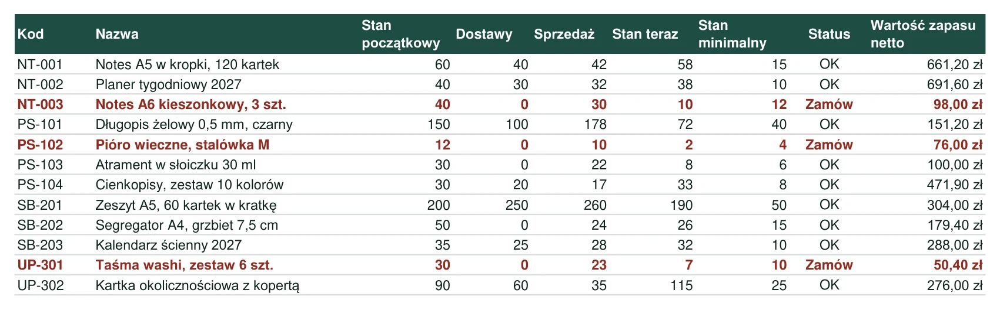
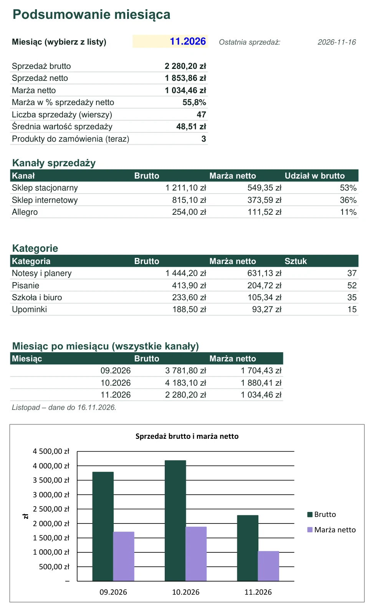
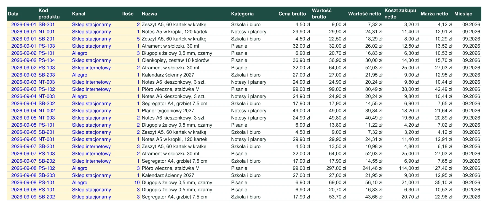

Próbka arkusza · projekt koncepcyjny
Sprzedaż i magazyn małego sklepu w Excelu
Arkusz dla fikcyjnego sklepu papierniczego „Notesowo”: wpisujesz sprzedaż i dostawy, a arkusz sam liczy wartość, marżę i stan magazynu, podpowiada, co zamówić, i pokazuje podsumowanie wybranego miesiąca z wykresem.
Dane zmyślone: sklep Notesowo, produkty i sprzedaż nie istnieją.
7 arkuszy, od instrukcji po podsumowanie
6 list rozwijanych: kody, kanały, kategorie, VAT, miesiąc
0 błędów formuł po przeliczeniu w Excelu
0 makr: zwykły plik XLSX
Co robi arkusz
01 Sprzedaż w jednym wierszu Data, kod z listy, kanał z listy, ilość. Nazwa, kategoria, cena, wartość brutto i netto, koszt i marża liczą się same.
02 Ochrona przed literówkami Kod produktu i kanał wybiera się z listy. Ilość musi być liczbą większą od zera. Nieznany kod podświetla się na czerwono.
03 Stan magazynu na bieżąco Stan początkowy + dostawy − sprzedaż. Gdy stan spadnie do minimum, wiersz robi się czerwony ze statusem Zamów .
04 Podsumowanie wybranego miesiąca Miesiąc wybierasz z listy: sprzedaż, marża w zł i w %, liczba sprzedaży, kanały, kategorie i wykres miesiąc po miesiącu.
Pobierz plik XLSX
Formuły: SUMIFS, COUNTIFS, INDEX/MATCH, IFERROR – działają w Excelu od wersji 2010 i są dostępne także w Arkuszach Google.
Jak to wygląda

Magazyn. Trzy produkty spadły do minimum – arkusz podświetla je sam.
Podsumowanie. Zmiana miesiąca w żółtej komórce przelicza wszystkie liczby.
Sprzedaż. Na żółtym tle – to, co się wpisuje. Reszta to formuły. Pełny rejestr: 246 sprzedaży z trzech miesięcy.
Jak sprawdziliśmy
Plik przeliczony w Microsoft Excel: wszystkie formuły bez błędów.
Sumy z podsumowania i stany magazynu porównane z niezależnym obliczeniem na tych samych danych – zgadzają się co do grosza.
W arkuszu „Start”: krótka instrukcja, legenda kolorów i założenia (ceny sprzedaży brutto, zakupu netto, bez zwrotów i rabatów).
Projekt koncepcyjny Frame One. Nazwa „Notesowo” sprawdzona w KRS, CEIDG i Google (17.11.2026): takiej firmy nie ma.